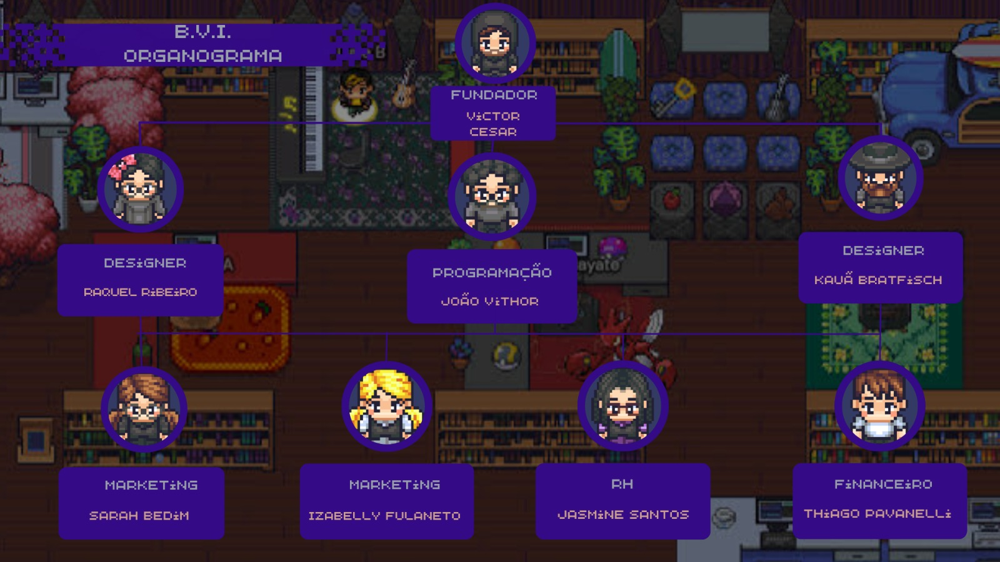

Nós analisamos que crianças e adolescentes concentram as maiores proporções de leitores na população. Na faixa de 5 a 10 anos, 67% são leitores. O topo do índice está na faixa de 11 a 13 anos, com 84%, e 75% entre os jovens de 14 a 17 anos. Contudo, apesar de não ocuparem a maior faixa proporcional de leitores, os jovens de 18 a 29 anos compuseram o quadro que mais cresceu, passando de 63% para 72% no período de um ano de pandemia.
Com base nisso, decidimos nos juntar para criar a B.V.I. e ajudar vestibulandos e leitores, proporcionando e-books de qualidade.
Abaixo você encontrará um organograma com os respectivos cargos hierárquicos:
